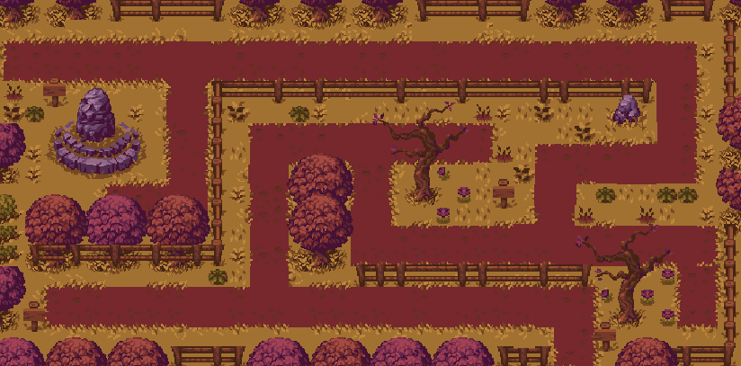

Software Manual Tester
Hi, I'm Nathaniel Pulan
An aspiring QA Engineer focused on delivering reliable, high-quality software through detailed manual testing and continuous learning. Currently honing my skills in test design and defect reporting while preparing to dive into automation.